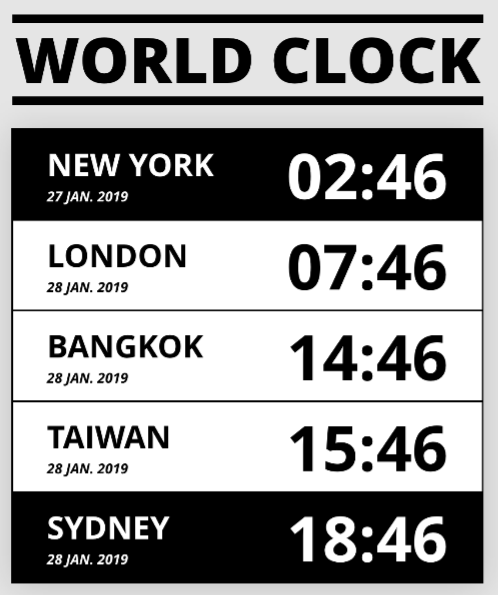
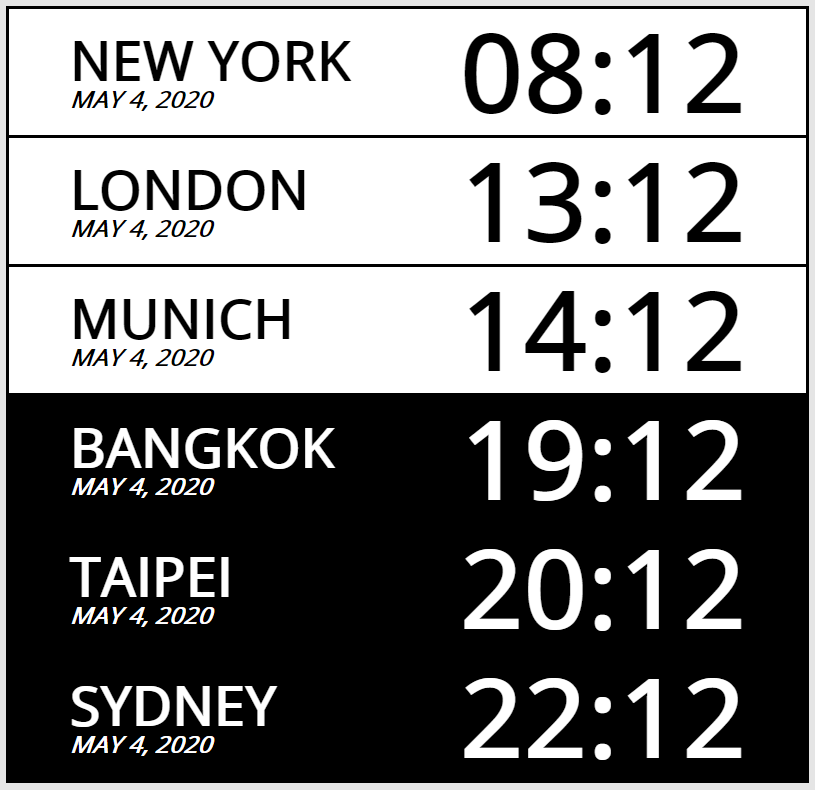
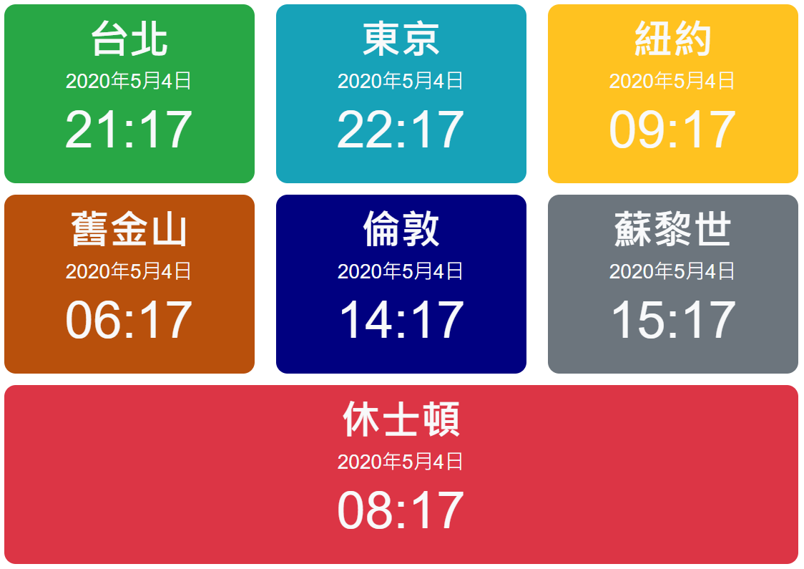

新手JavaScript地下城第四關 - 時區
這是系列文的第二篇，但因為我 柿子挑軟的吃 最近想精進一些有關用 JS 操作時間的技巧，所以決定先選擇這個題目來處理。

- 從圖中可以得知，版面排列和樣式簡潔明瞭，應該在 CSS 和 HTML 結構設計上不會有太多挑戰，可以很快進入 JS 取得時間、調整時區和更新時間的部分。
重要處理步驟和技巧
CSS, HTML
- 這邊先要說明一下，其實這個時鐘的關卡我前後做了兩個不同但類似的成品，第一個是由六角提供的設計稿，那時的想法很單純，所有的 HTML 標籤就直接先通通刻好，再分別使用 JS 來選取、操控元素，後來才發現如果要擴充其他城市會有點麻煩。第二份是採用 Bootstrap 4 來調整版面和樣式的版本，HTML 元素則使用 JS 內的資料陣列，以迴圈和
innerHTML() 來塞入，整體擴充性較佳。
- 六角的那份，採用的方法是給每個城市外層定義一個區塊
<div class="timebox">，且 CSS 定義 .timebox{display: flex}，讓左右側的子元素 (區塊元素) 可以併排呈現。同時，預先填入不會變動的各地地名 (慕尼黑是朋友要求加上的)，會即時變動的左右側時間元素，都一一設定好 id 供 JS 選擇。
- 其他 CSS 較特殊的部分，我從設計稿中推測依照時間不同，各地區的文字和背景色有黑底白字 (夜間)、白底黑字 (日間) 兩種樣式，所以另外定義了
.timebox.night{background-color: #000000; color: #ffffff} 讓 JS 可以順利切換到黑夜。
- 下圖為結果的黑白效果，定義白天時間為 06:00 到 17:59。

- 第二份是幫朋友寫的 Bootstrap 版本，因 BS 本身就已經定義了很多兼具彈性和美觀的樣式類別，所以在 CSS 的設計上就相當簡單，在實作時有兩個經過思考的點：
- 因為是使用陣列資料和迴圈塞入，如果要使用 BS 定義好的樣式，在每個城市的物件資料中也要加入相關的訊息，比如說想依次對 cityA, cityB, cityC 加入 bg-primary, bg-secondary, bg-info 的樣式，則必須讓 JS 的陣列記錄資料用類似下面的方法，並在迴圈組字串時搭配
<div class="${city.background}"> 才能讓套用 BS 的樣式：
1
2
3
4
5
| let dataArray = [
{name: "cityA", background: "bg-primary"},
{name: "cityB", background: "bg-seconday"},
{name: "cityC", background: "bg-info"},
]
|
- 由於 BS 的網格系統對響應式設計支援算完整，所以記得使用
<div class="col-md"> 或是 <div class="col-lg"> 之類的設定來調整版面，另外使用網格系統要記得用 <div class="row"> 包覆網格內容，我採取的是在大裝置時，三個地區成為一列，所以使用 JS 組字串時，要使用判斷式如下：
1
2
3
4
5
6
7
8
9
10
11
12
13
14
15
16
17
| let htmlStr = "";
for (let i = 0; i < newCities.length; i++) {
if (i % 3 == 0) {
htmlStr += `<div class="row mt-md-3">`;
}
htmlStr += `
<div class="col-md">
<div class="timebox">
</div>
</div>`;
if (i % 3 == 2 || i == newCities.length - 1) {
htmlStr += `</div>`;
}
}
mainNode.innerHTML = htmlStr;
|

JavaScript
- 不論是六角版或是 BS 版，最重要的都是使用 JS 內建物件 Date，使用
const date = new Date()語法，即可取得瀏覽器的本地時間，一般常見使用下列語法：
1
2
3
4
5
6
7
8
9
10
| const date = new Date();
date.getDate();
date.getDay();
date.getMinutes();
date.getHours();
date.getMonths();
date.getFullYear();
date.getTime();
|
- 一開始我想法是抓取本地時間後，用
date.getTimeZoneOffset 的方法來回算取得 UTC 時間，接著再把各地與 UTC 的標準時差放入，算得各地的時間，是比較硬幹的做法，但在完成測試時，發現歐美普遍施行的夏令時間會造成錯誤，只好重新來過。
- 經過研究後發現，可以使用
date.toLocaleString(locales, options) 的方法直接取得各地時間，詳細的 locales 和 options 設定，可參考 Ref. by W3Schools ，各時區的參考則是 Ref. by timezonedb
- 我的設定是：
1
2
3
4
5
6
7
8
9
10
11
12
13
14
| let newCities = cities.map(function (cityObj) {
let option = {
day: "numeric",
month: "short",
year: "numeric",
hour: "2-digit",
minute: "2-digit",
hour12: false,
timeZone: cityObj.timezone,
}
cityObj.date = new Date().toLocaleDateString("zh-TW", option);
return cityObj;
});
|
- 雜記：
- 對取得的各地時間字串，可以用
string.split()方法處理成陣列，再使用陣列方法如：array.splice() 來取得想要的值。
- 判斷黑夜白天可以用一個小函式配判斷式，再加上
setAttribute()方法處理。
1
2
3
4
5
6
7
8
9
10
11
12
13
| function isNight(hour) {
if (hour >= 6 && hour < 18) {
return false;
} else {
return true;
}
}
if (isNight(cityHour)) {
rightDiv.parentNode.setAttribute("class", "timebox night");
} else {
rightDiv.parentNode.setAttribute("class", "timebox");
}
|